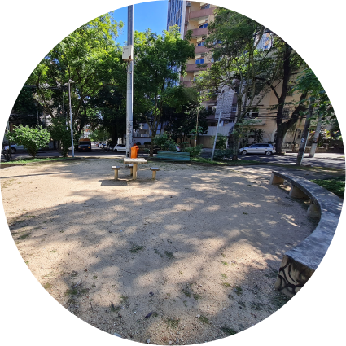
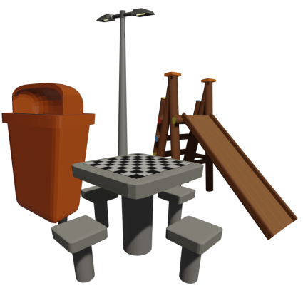
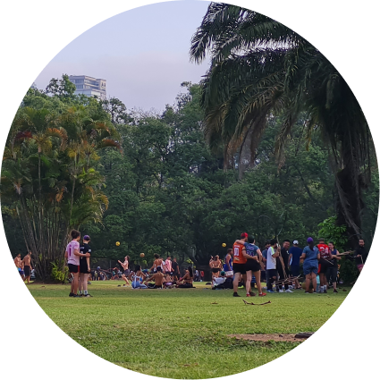
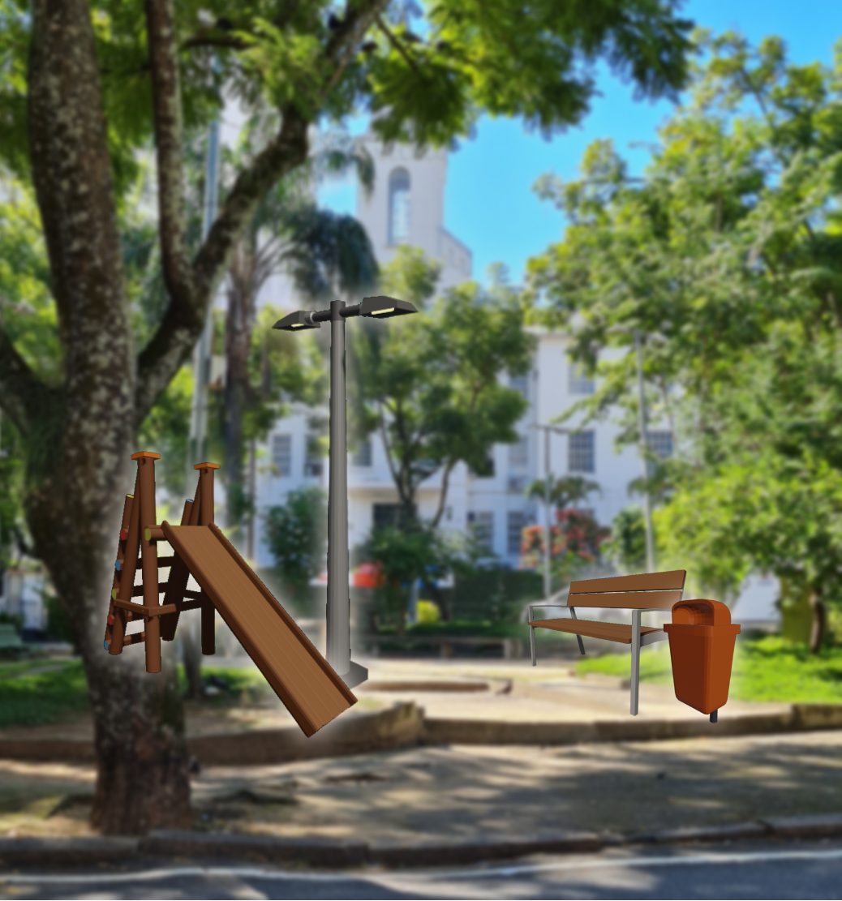
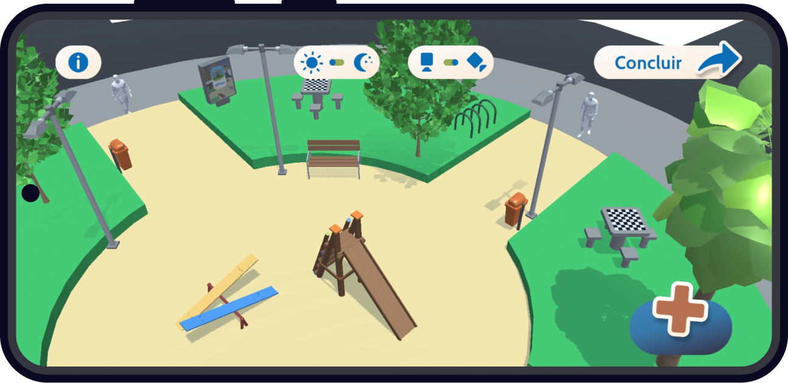
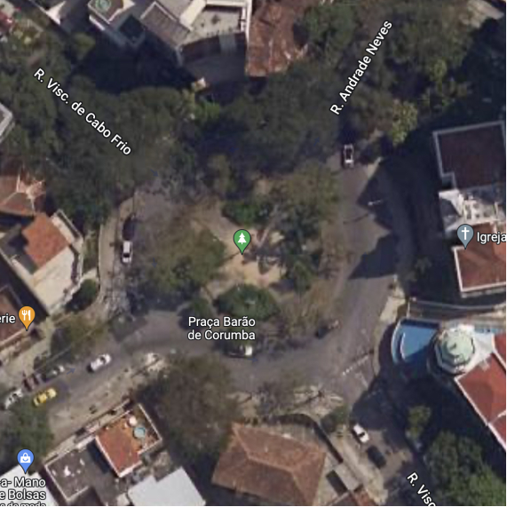
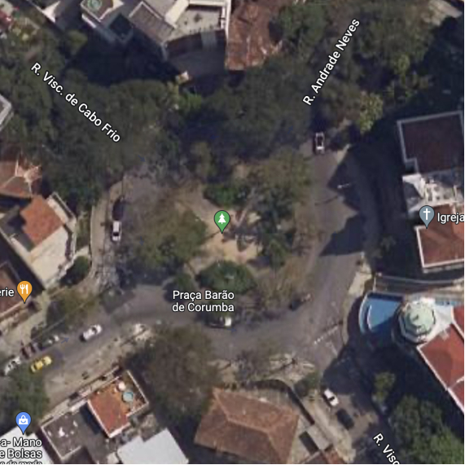
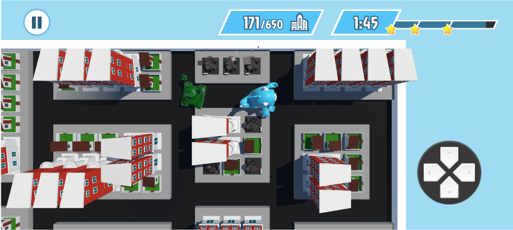
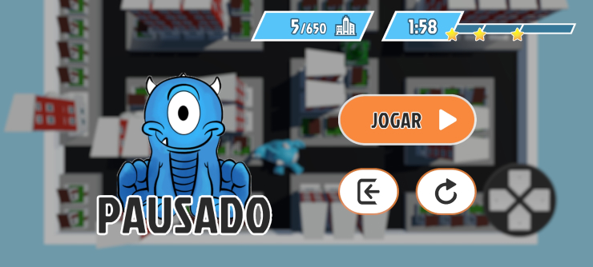

Praça
Um espaço público de permanência e convivência.
Urbanismo Tático X Ações para Transformar Cidades | Editora UFRJ, 2022

Uma praça é formada por:

Espaço

Objetos

Pessoas
O espaço e o mobiliário devem atender às necessidades dos seus frequentadores.
Porém...
Será que os espaços atuais realmente satisfazem os desejos de quem ali convive?
Se essa praça fosse sua, ela continuaria igual?
O que mudaria se as pessoas pudessem repensar as suas praças?
rePraça
é uma plataforma que possibilita a imaginação coletiva das praças pelos seus frequentadores.
Nela, o usuário utiliza itens do mobiliário urbano para montar uma versão virtual da praça a ser imaginada.

Cada projeto é então exportado para a Galeria de Praças, onde é possível ver todas as imaginações já geradas.
.png)
.png)
.png)
Imagens da imaginação de praças geradas por usuários
Assim, quando o público repensa o estado atual dos espaços, podemos comparar o

atual
vs.
.png)
imaginário
e, assim, compreender quais usos e sonhos as pessoas desejam para cada praça da cidade :)
Repense,
reimagine,
rePraça

Imagens da imaginação de praças geradas por usuários

vs.
atual
imaginário
Repense,
reimagine,
rePraça
Gosta de planejar cidades?
Experimente destruí-las.
Em Arrasa Quarteirão você controla um monstro em fuga descontrolada, quebrando tudo pelas ruas onde passa. Corra, destrua e fuja!
Ver mais

